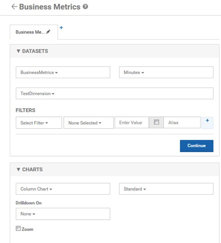
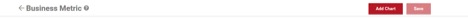
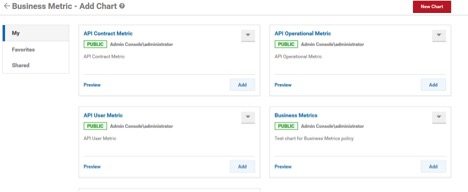
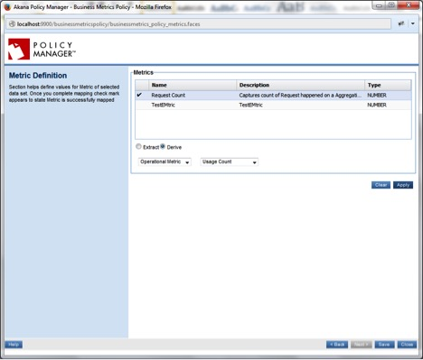
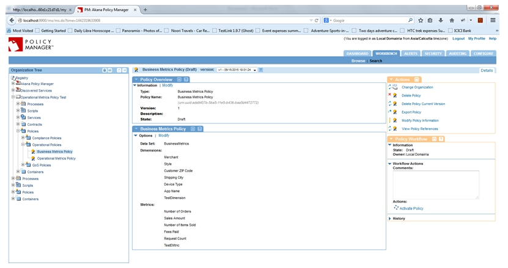
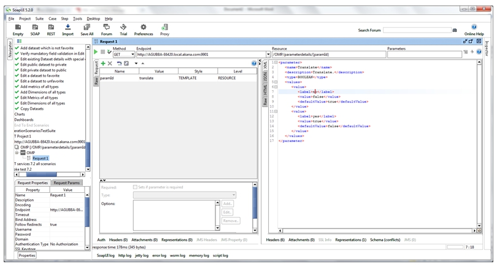

Business Metrics Policy Use Case - Extracting Business Information from Service Usage Data Using XPath/JsonPath/RegEx
The following use case illustrates how to use the Business Metrics Policy to extract business information from the service usage data using XPath/JsonPath/RegEx from the request payload and derive operational metrics.
Managing Policies
Business Metrics Policy Use Cases
Supported Platforms: 8.0 and greater.
Configuration
- Launch the Envision Console, select New Dataset, and define a dataset with sharing as Public.

- In the new dataset, select New Dimension and define a dimension with the TEXT type.

- Select New Metric in the same dataset and define a metric with the the COUNT type and all aggregations.

- Save aggregation settings for the selected dataset.

- Select New Chart, and create a chart using this dataset with the follwing configuration:



- Select New Dashboard and create a dashboard with the newly defined chart:



- Launch the Policy Manager Management Console and create a service with http://www.restfulwebservices.net/wcf/CurrencyService.svc?wsdl7.
- Virtualize the service on Network Director.

- Navigate to Policies > Operational and create a Business Metrics Policy using Add Policy.
- Configure the policy and select the dataset defined above.

-
Provide Extract/Derive Configuration for each of the dimensions and metrics using the example illustrated below:
- a. Dimension using Extract – To obtain a value in request payload using XPath/JsonPath/RegEx.
- b. Metric using Derive – To obtain usage count.



- Attach the policy to the service.


- Send multiple requests to generate data for various usage scenarios.




- Check the data to be recorded in MongoDB and Dataset. The data should be appropriate per the requests sent.
- The chart should record information based on the data generated in the datasets from above requests.
Back to top